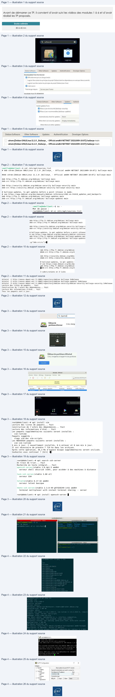
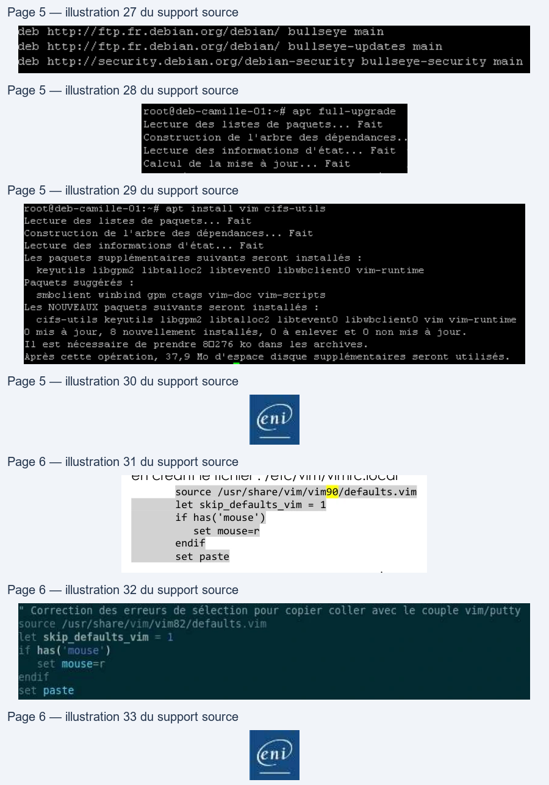

Transcription du document du Drive TSSR. La mise en forme est adaptée au Web ; les compléments IA du portail sont présentés séparément.
Titre exact du cours complet
TP du Module 06 – Gestion des paquets logiciels
Avant de démarrer ce TP, il convient d’avoir suivi les vidéos des modules 1 à 6 et d’avoir
réalisé les TP proposés.
Durée estimée
30 à 45 mn
I.
Gérer les installations logicielles avec interface graphique
Afficher le composant les "Software & Updates"
Rechercher le composant dans le menu Gnome
•
Vérifier les paramétrages dans les différents onglets
o Rechercher les informations relatives aux dépôts configurés
Onglet Debian Software, configuration du dépot principal Main. Possibilité de cocher contrib et non-free
Onglet Updates, presence de bullseye-security et bullseye-updates
o Désactiver le dépôt CDROM si nécessaire
Décocher les cases au besoin pour désactiver les dépots cdrom.
Page 1/6
© ENI – Tous droits réservés
Q
software
a
Software & Upd.
ogiciels
bian
Software
Other Sottware
Updates
Authentification
Developer Options
Debian Software
Other Software
Updates
Authenti
Dowricadable fram the Internet
Install
updates
from
Me
dep
Serveur
pour France
When
there are
security
update
Display
immediately
Inctaltabie from CD-ROM/DVD
When
there are
other
update
Debian Software
Other Software
Updates
Authentification
Developer Options
cdrom:[Debian GNU/Linux 11.1.0 _Bullseye_ - Official amd64 NETINST 20211009-10:07]/ bullseye main
cdrom:[Debian GNU/Linux 11.1.0 _Bullseye_ - Official amd64 NETINST 20211009-10:07]/ bullseye main
Titre exact du cours complet
Vérifier la configuration du fichier sources.list dans /etc/apt :
•
Quelles lignes définissent l'emplacement des sources d'installation des paquets
binaires ?
•
Quelles lignes définissent l'emplacement des mises à jour ?
•
Pouvez-vous récupérer les paquets sous la forme du code source ?
Les lignes commençant par "deb " indiquent les dépôts de binaires
Les lignes contenant “bookworm-updates” indiquent les dépôts de mises à jour
Les lignes commençant par “deb-src ” indiquent la disponibilité des paquets sources
•
Désactiver l'accès aux dépôts concernant le code source.
Faire une élévation de droit en tant que root et lancer l'édition du fichier
→
Pour modifier toutes les lignes visées en une fois, les options de substitution de VI sont à privilégier
:g/^deb-src/s/^/#
Recherche des lignes commençant par deb-src, puis substitution du caractère début de ligne ^ par #
Effectuer une mise à jour des paquets installés avec apt :
Lancer la mise à jour de la base données locales des paquets avec
•
Combien de paquets seront mis à jour ? ( pourquoi ? )
Très peu de paquets, voire aucun.
Cela est du au mode d’installation net install qui a directement récupéré des paquets à jours
Page 2/6
© ENI – Tous droits réservés
camille@debclient:-$ cat /etc/apt/sources.list
# deb cdrom:[Debian GNU/Linux 11.1.0 Bullseye
- Official amd64 NETINST 20211009-10:07]/ bullseye main
#deb cdrom:[Debian GNU/Linux 11.1.0 Bullseye
- Official amd64 NETINST 20211009-10:07]/ bullseye main
deb http://ftp.fr.debian.org/debian/
bullseye main
deb-src http://ftp.fr.debian.org/debian/ bullseye main
deb http://security.debian.org/debian-security bullseye-security main
deb-src http://security.debian.org/debian-security bullseye-security main
# bullseye-updates,
to get updates before a point release is made;
# see https://www.debian.org/doc/manuals/debian-reference/ch02.en.html#
updates and backports
deb http://ftp.fr.debian.org/debian/
bullseye-updates main
deb-src http://ftp.fr.debian.org/debian/ bullseye-updates main
camille@debclient:-$ su
-
Mot de passe
:
root@debclient:~# vi /etc/apt/sources.list
El
deb http://ftp.fr.debian.org/debian/ bullseye main
deb http://ftp.fr.debian.org/debian
deb-src http://ftp.fr.debian.org/debian/ bullseye main
#deb-sre http://1tp.fr.debian.org/d
deb http://security.deblan.org/debian-security bullseye-s
deb http://security.debian.org/debi
deb-src http://security.debian.org/debian-security bullse
wdeb-src http://security.debian.org
# bullseye-updates,
to get updates before a point release
# bullseye-updates,
Lo get updates
# see https://mw.debian.org/doc/manuals/debian-reference
# see https: //waw.debian.org/doc/ma
deb http://ftp.fr.debian.org/debian/ bullseye-updates mai
deb http: //ftp.fr.debian.org/debian
deb-src http://ftp.fr.debian.org/debian/ bullseye-updates
fReb-sre http://ftp.fr-debian.org/d
:9/"deb-src/s/"/40
3 substitutions on 3 Lines
root@debclient:-# apt update
Atteint
:1 http://nexus.depot-eni.fr:8081/repository/debian bullseye InRelease
Atteint
:2 http://nexus.depot-eni.fr:8881/repository/deblan bullseye-updates InRelease
Atteint
:3 http://nexus.depot-eni.fr:8881/repository/debian-security/debian-security
bullseye-security InRelease
Lecture des listes de paquets...
Fait
Construction de l'arbre des dépendances...
Fait
Lecture des informations d'état...
Fait
Tous les paquets sont à jour.
ni
Titre exact du cours complet
Installer le logiciel suivant avec l'outil "Logiciels"
•
Gparted
(outil de partitionnement)
→
→
Rechercher Gparted et lancer son installation.
Le mot de passe root est demandé pour valider l’élévation de droits
o Lancer cette application depuis les menus Gnome
→
Gparted est bien présent dans les applications.
Le logiciels se lance après demande d’une nouvelle élévation de privilèges.
Ne rien modifier et quitter le logiciel.
Installer les paquets suivants avec la commande apt :
•
vim
(Editeur VI amélioré)
Valider l'installation du paquet et de ses dépendances.
•
Serveur SSH (rechercher d’abord le nom du paquet adapté)
La recherche apt search ssh renvoie de très nombreux résultats.
On peut limiter les résultats en cherchant ssh-server
A noter que le paquet nommé simplement ssh est un “métapaquet”
qui installe openssh-server + openssh-client (si pas déjà present).
Page 3/6
© ENI – Tous droits réservés
Q Gparted
Éditeur de partitions GParted
Pepe
FRS
—EEE=
LE )
Crée, réorganise et supprime des partitions
¥
wee
e.
4
> mea rted
Crée, réorqgi
ster
=
nr PRE EERTE
enereses
=
Activités
2
fdevisde .GParted
»
40 00 Gi
|
L
»
on
vt
jeite
Par
devisdal
tema
pe vonystem
40.00Gi0
40006
11.00
0 boot, um
root@debclient:-# apt install vim
Lecture des listes de paquets...
Fait
Construction de l'arbre des dépendances...
Fait
Lecture
des
informations
d'état...
Fait
Les paquets supplémentaires suivants
seront installés
:
vim-runtime
Paquets
suggérés
:
ctags vim-doc vim-scripts
Les NOUVEAUX paquets suivants
seront installés
:
vim vim-runtime
9 mis
à jour,
2 nouvellement installés,
© à enlever et 0 non mis
à jour
IL est nécessaire de prendre
7 719 ko dans
les archives
après cette opération,
36,3 Mo d'espace disque supplémentaires
seront utilisés
Souhaitez-vous continuer
? [0/n]
oll
root@debclient:~# apt
search ssh-server
En
train
de
trier...
Fait
Recherche en texte intégral...
Fait
openssh-server/stable
1:8.4p1-5 amd64
serveur shell
sécurisé
(SSH),
pour accéder
a des machines
a distance
task-ssh-server/stable
3.68 all
serveur
SSH
telnetd/stable 0.17-42 amd64
serveur telnet basique
tmate-ssh-server/stable
2.3.0-49-g97d20249-1+b1 amd64
terminal multiplexer with instant terminal
sharing
--
server
root@debclient:~# apt install openssh-server | |
Titre exact du cours complet
•
Terminator
Terminator est un logiciel terminal pour client graphique Linux hautement configurable.
Afficher les informations sur ces 3 paquets avec les commandes :
•
$ apt show <paquet>
•
$ dpkg -L <paquet>
→
apt show récupère de nombreuses informations : version, taille, dépendances…
dpkg -L va lister les fichiers liés à ce paquet présents sur le système.
Connectez-vous via Putty sur votre VM Debian graphique.
Récupérer un client Putty sur Distrib ou bien à l’adresse
https://the.earth.li/~sgtatham/putty/latest/w64/putty.exe
→
Lancer le logiciel, saisir l'adresse IP de la VM, et saisir login/password.
Page 4/6
© ENI – Tous droits réservés
carlie@éebctient.
-
=
‘
milkeritckebebe nt:
is
| =
Ke
s ~SF
Cage
M
zewilie
222,100°2 pes
Sern
Basic opens
fot your PUTTY passion
ux
debe
lie
S-amii4
81
SEP
Gebia
1
Sabosd
Hoa eme eu acer
Et
ae
ioe
:
.
ea
10.43222 100
2
c
pytug
Window
sti
Osea
Oùe
Teas
exch tea: DE applicasie
vical

Titre exact du cours complet
II.
Gérer les installations logicielles sans interface graphique
Configurer manuellement les dépôts Internet dans le fichier /etc/apt/sources.list
•
Ajouter les directives :
o deb http://ftp.fr.debian.org/debian/ bookworm main
o deb http://ftp.fr.debian.org/debian/ bookworm-updates main
•
Garder la directive :
o deb http://security.debian.org/debian-security bookworm-security main
Les dépots Debian nécessaires Bulseye → Bookworm
Vérifier les mises à jour disponibles
•
Combien de paquets seront mis à jour ?
•
Effectuer les mises à jour et redémarrer si nécessaire
Le nombre de mises à jour dépend de l'écart entre la date de génération du DVD utilisé pour l'installation du
système et la date de lancement de la demande de mise à jour
Installer les paquets suivants avec la commande apt :
•
vim
(éditeur VIM)
•
cifs-utils
(outils pour la connexion aux partages SMB)
Il est possible de lancer l'installation des deux paquets en même temps avec apt
Page 5/6
© ENI – Tous droits réservés
deb http: /ttp.fr.debian.org/debian,’
bullseye main
Meh httpis/ftp.tr.debian.org/debian/ hullseye-updates main
deb http://security.debian.org/debian-security bullseye-security main
root@deb-camille-O1:~#
apt
full-upgrade
Lecture
des
listes
de
paquets...
Fait
Construction
de
l'arbre
des
dépendances.|
Lecture
des
informations
d'état...
Fait
Calcul
de
la mise
à
jour...
Fait
root@deb-camille-Ol:~#
apt
install vim cifs-utils
Lecture
des
listes
de
paquets...
Fait
Construction
de
l'arbre
des
dépendances...
Fait
Lecture
des
informations
d'état...
Fait
Les
paquets
supplémentaires
suivants
seront
installés
:
keyutils
libgpm2
libtalloc2
libteventO
libwhclientO
vim-runtime
Paquets
suggérés
:
smbclient
winbind
gpm
ctags vim-doc vim-scripts
Les NOUVEAUX paquets
suivants
seront
installés
:
cifs-utils
keyutils
libgpm2
libtalloc2
libteventO
libwbclientO
vim vim-runtime
O mis
à
jour,
8
nouvellement
installés,
0
à enlever
et
O
non mis
à
jour.
Il
est
nécessaire
de
prendre
60276
ko
dans
les
archives.
Après
cette
opération,
37,9
Mo
d'espace
disque
supplémentaires
seront
utilisés.
:
Titre exact du cours complet
Configurer le fonctionnement de VIM pour les deux Postes:
•
Lancer l'édition : # vi /etc/vim/vimrc
•
Décommenter la ligne contenant la mention : syntax on (active la coloration
syntaxique)
•
Ajouter les modifications suivantes pour retrouver un comportement normal de vim
en créant le fichier : /etc/vim/vimrc.local
source /usr/share/vim/vim90/defaults.vim
let skip_defaults_vim = 1
if has('mouse')
set mouse=r
endif
set paste
.
Vérifier dans /usr/share/vim le nom du dossier suivant, il change selon les versions de Debian
Page 6/6
© ENI – Tous droits réservés
skip_defaults_vim
has(
)
mouse
